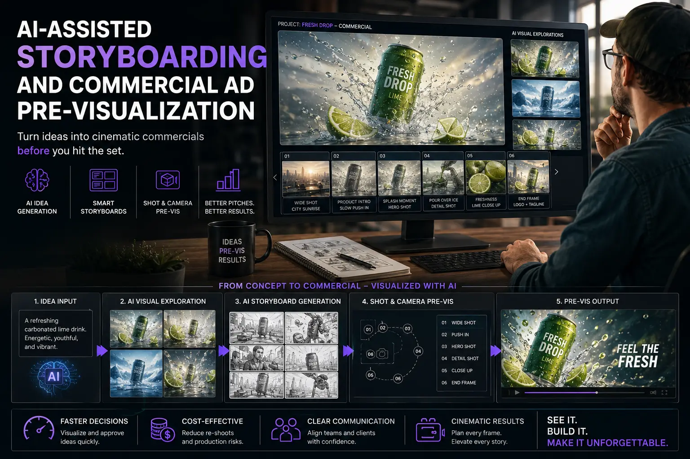
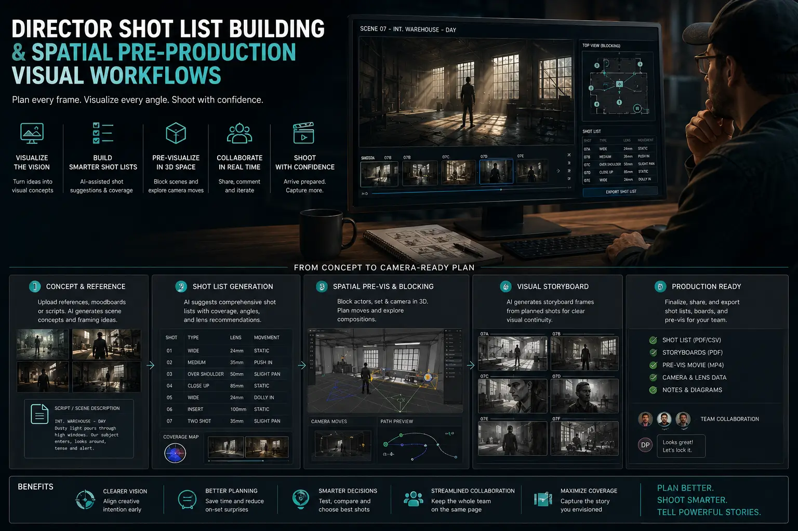

Using Generative AI to Design Ultra-Precise Storyboards Before Hitting the Set
The Pre-Production Gap That Costs Brands Lakhs on Shoot Day
The most expensive minutes in commercial video production are the ones spent on set figuring out what should have been decided before the crew arrived. When a director describes a shot verbally — "I want a low-angle close-up of the product with warm backlight and the model entering from the left" — every person on the crew interprets that description slightly differently. The cinematographer imagines one angle, the gaffer sets a different light position, the art director stages the set with a different spatial layout, and the first take reveals that what the director envisioned is not what the crew delivered. Adjustments follow. Minutes become hours. Day rates burn.
This interpretation gap is the single largest source of wasted time and budget on commercial shoots — and it exists because traditional Video Shoot Pre-Production tools are insufficiently precise. Hand-drawn storyboards convey narrative sequence but lack the visual fidelity to communicate exact framing, lighting, and spatial relationships. Mood boards assembled from stock images capture general aesthetic direction but cannot show the specific shot the director intends to capture. Written shot lists describe camera specifications but cannot visualise the resulting frame.
AI-Assisted Storyboarding eliminates this gap entirely. By using generative AI image tools to produce photorealistic or highly detailed stylised frames for every shot in the production, directors can communicate their exact creative vision — specific camera angles, lighting moods, talent positions, set configurations, and colour palettes — with a precision that was previously only achievable through expensive pre-visualization renders or test shoots.
How Generative AI Transforms the Storyboarding Process
The application of generative AI to Commercial Ad Pre-Visualization represents a fundamental shift in how creative teams plan visual content. Instead of describing shots with words and sketches, directors can now generate reference frames that show the entire crew what the finished shot should look like:
- Photorealistic frame generation. Modern generative AI tools (Midjourney, DALL-E, Stable Diffusion, Firefly) can produce photorealistic images that depict specific camera angles, lighting setups, spatial compositions, and environmental contexts. A director can generate a reference frame showing a low-angle product shot with warm backlight, a model entering from the left, and a shallow depth-of-field background — and the resulting image communicates the intended shot more precisely than any verbal description or hand-drawn sketch.
- Rapid iteration and variation. Unlike traditional storyboarding, which requires redrawing to explore alternative compositions, AI storyboarding allows directors to generate dozens of variations in minutes — testing different camera heights, lens widths, lighting directions, and colour palettes before committing to a final composition. This iterative process is the foundation of effective mapping out ad film frames at the pre-production stage.
- Consistent visual language across the production. By generating all storyboard frames with consistent style parameters, AI storyboarding produces a cohesive visual reference document that ensures every shot in the production shares a unified aesthetic — colour temperature, contrast ratio, lighting character, and compositional style — before a single camera is set up.
- Client alignment before production commitment. AI-generated storyboards allow directors to share near-final visual references with clients and stakeholders during the approval stage — creative media campaign planning that ensures alignment on creative direction before production budgets are committed. This reduces the risk of expensive re-shoots caused by misaligned expectations.
Reduced Setup Time
Minimizing commercial shoot delays by providing the crew with precise visual references for every shot — eliminating the on-set interpretation work that consumes 30-50% of typical setup time.
Precise Shot Planning
Director shot list building with AI-generated frames produces shot lists that communicate exact framing, lighting, and composition — not just camera specifications and verbal descriptions.
Spatial Pre-Visualization
Spatial pre-production visual workflows use AI-generated frames to plan camera positions, talent blocking, set layouts, and lighting placements in the actual shooting environment before the crew arrives.
Production Setup Efficiency
Optimising digital ad video production setups through pre-visualised storyboards ensures equipment, props, and set dressing are prepared for each shot before the shoot day begins.

The AI Storyboarding Workflow: From Script to Visual Blueprint
Integrating AI-Assisted Storyboarding into a professional Video Shoot Pre-Production workflow requires a structured process that translates the creative brief and script into a comprehensive visual production blueprint:
- Step 1 — Script breakdown and shot identification. The director and cinematographer review the script or creative brief and identify every distinct shot required — establishing shots, close-ups, inserts, transitions, and cutaways. Each shot is assigned a number, a description, and a set of technical specifications (lens, movement, duration).
- Step 2 — AI frame generation. For each identified shot, the director writes a detailed prompt describing the desired composition: camera angle, focal length, lighting direction, talent position, set elements, colour palette, and mood. The generative AI tool produces 3-5 variations, from which the director selects the closest match to their creative vision and refines through iterative prompting.
- Step 3 — Storyboard assembly and annotation. The selected AI frames are assembled in sequence to create the complete visual storyboard. Each frame is annotated with technical specifications — camera position, lens choice, movement direction, lighting setup notes, audio requirements, and estimated duration. This annotated storyboard becomes the primary production reference document.
- Step 4 — Spatial mapping. Using the AI-generated frames as reference, the production team creates overhead diagrams of each shooting setup — marking camera positions, light placements, talent marks, and set element positions. These spatial pre-production visual workflows allow the crew to pre-plan the physical arrangement of every setup before arriving on location.
- Step 5 — Client review and approval. The complete visual storyboard — AI frames, technical annotations, and spatial diagrams — is presented to the client for approval. Because the frames are photorealistic rather than abstract sketches, clients can evaluate creative direction with unprecedented clarity, reducing the risk of post-production revision requests.
Applications Across Commercial Production Formats
Commercial Ad Pre-Visualization through AI storyboarding applies across the full spectrum of commercial video formats:
Brand Campaign Films
- Generate establishing frames that visualise location settings, talent wardrobes, and environmental moods before location scouting begins.
- Pre-visualise hero product shots with specific lighting angles, surface textures, and background configurations.
- Create mapping out ad film frames for complex multi-scene narratives — ensuring visual continuity across locations, talent, and lighting conditions.
- Share photorealistic references with location scouts, art directors, and wardrobe stylists to align all departments on the director's vision.
Product and E-commerce Videos
- Pre-visualise product close-ups with specific lens perspectives, lighting setups, and background treatments.
- Generate frame references for product interaction sequences — unboxing, assembly, usage — that show exact hand positions and camera angles.
- Configure digital ad video production setups — studio layout, lighting rig, camera rail positions — using AI frames as spatial planning references.
- Test multiple visual approaches (moody editorial, clean commercial, lifestyle contextual) before committing to a production style.
Social Media and Short-Form Content
- Pre-visualise vertical 9:16 compositions for Instagram Reels and YouTube Shorts — ensuring framing works for mobile-first platforms.
- Generate hook frames — the critical first 1-2 seconds — and test multiple visual approaches before production.
- Apply creative media campaign planning by generating frames for an entire month's content calendar, ensuring visual variety while maintaining brand consistency.
- Use AI frames to brief talent on exact positioning, expression, and action — reducing rehearsal time on shoot day.
Building Director Shot Lists with AI Precision
The traditional director's shot list is a text document — a table of shot numbers, descriptions, and technical specifications. Director shot list building enhanced by AI storyboarding transforms this text document into a visual production manual where every entry is accompanied by a photorealistic reference frame:
- Each shot entry includes the AI-generated frame, camera specifications (lens, aperture, frame rate), movement instructions, lighting notes, and talent direction.
- Shots are grouped by setup — all shots sharing the same camera position and lighting configuration are batched together to minimise reconfiguration time.
- The shot list includes estimated setup time and recording time for each batch, producing a realistic shoot-day schedule.
- Contingency shots and alternative compositions are included with their own AI references, giving the crew pre-visualised backup plans for weather changes, talent availability, or time constraints.

Conclusion
AI-Assisted Storyboarding represents the most significant advancement in Video Shoot Pre-Production efficiency since the transition from film to digital. By enabling directors to generate photorealistic reference frames for every shot in a production, AI storyboarding eliminates the interpretation gap that causes on-set delays, reduces setup time by 30-50%, and ensures creative alignment between directors, crews, and clients before a single frame is captured.
Through disciplined Commercial Ad Pre-Visualization, precise Director shot list building, and systematic spatial pre-production visual workflows, production teams can approach every shoot day with a complete visual blueprint that transforms mapping out ad film frames from verbal description into photorealistic precision — minimizing commercial shoot delays and maximising the value of every production hour.
At The PhD Ads, we integrate AI-Assisted Storyboarding into every commercial production — from creative media campaign planning and digital ad video production setups to on-set execution and post-production — ensuring every shoot delivers more content, in less time, with fewer revisions.
Key Topics
Pre-Visualise Every Shot Before You Hit the Set
At The PhD Ads, we use AI-assisted storyboarding to generate photorealistic shot references for every commercial production — reducing setup time, eliminating interpretation errors, and maximising shoot-day efficiency.
Email: team@e2o.in